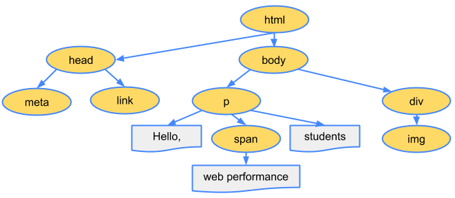
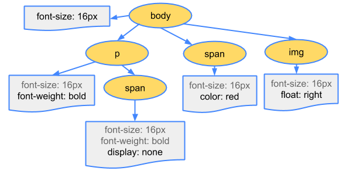
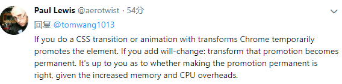
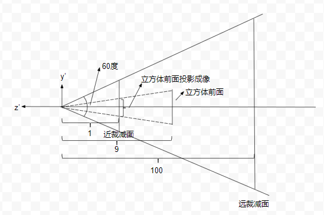
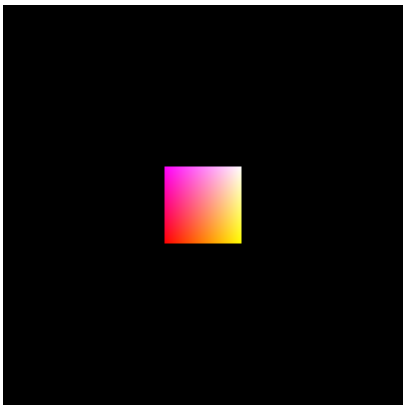

offline cookbook是关于service worker缓存及响应策略很好的文章，这里画个图总结一下：

offline cookbook是关于service worker缓存及响应策略很好的文章，这里画个图总结一下：
关于CSRF和XSS的文章非常多，相信很多人也看过了，笔者也看了一些，但总是记不住，这个做个非常简单的总结，让大家有个直观的印象
全称：Cross-Site Request Forgery，以用户的名义发起一个恶意请求，简单过程如下：
这里有幅网上找的图可以看出这个过程：

避免的关键是如何区分甄别出恶意请求：目前比较好的一种做法是为每个请求带上一个随机的token，这个token是服务器端和浏览器端通过某种方式约定好的，服务器端通过检查这个token来验证请求的合法性，这个很多后端框架都做了支持。
全称：Cross-site Scripting，想方设法在用户浏览的网页上植入恶意脚本，既然是脚本，就可以做任何事：获取隐私(cookie等)、打开其他网站、修改页面内容等等
怎么植入恶意脚本呢？举两个例子：
下面是一段JSP脚本，将来自当前页面url中的一个参数展示在页面上：
1 | <% String eid = request.getParameter("eid"); %> |
攻击者可以先准备一个url，在eid参数中存入恶意脚本：
1 | http://webpage.com/?eid=<script>alert(1)</script> |
然后引诱用户点击这个url，引诱的方式很多，如email，SNS等。用户一点击，脚本执行
又是一段JSP脚本，在数据库中查找一个名称，然后展示出来：
1 | <% |
如果这个名称是用户输入的，且正常情况下其他用户可以通过浏览网页看到这个信息，那么攻击者可以输入一段恶意脚本作为名称，这个名称被存入数据库中，所有用户都可能看到，所以很多用户都会受到攻击
由此可以看到，XSS一般是外部输入直接展示在页面上导致的，所以解决的办法就是对外部输入进行严格的验证，必要时对输入内容进行转码，如：
1 | <script>alert(1)</script> => <script>alert(1)</script> // html entity encode |
tree shaking指的是去掉没用到的代码，减小js文件体积从而提高加载速度；而code splitting指的是如何将js代码分解成不同的js文件，使得页面在打开时只加载必要的js文件，从而提高页面加载速度。
大概有以下三种分解方式：
将第三方代码(vendor code)和应用程序的代码分开来，使用不用的缓存策略，使得它们互不影响。我们始终都应该这么做
对于多页面应用，应该按页面打包js，并将各个页面的公共js提取出来作为单独的js文件进行加载
使用动态js加载语法，在页面首次打开后，在后面的操作过程中按需加载js，比如根据用户状态或模块切换动态加载相关js，提高页面首屏渲染速度
web性能分析通常都是基本理论+反复实践，没有一套统一的标准或方法。以我的经验来看，我们或多或少都知道一些或几点相关理论，但都是很片段很零碎的，不太好总结或关联起来。本文尝试在critical render path(后简称crp)上做一个分析总结。
crp是和浏览器首屏渲染有关的，指的是浏览器在渲染首屏之前需要经过哪些关键步骤。我们知道，首屏渲染速度是性能的一个重要指标，我们应该让用户在打开页面后尽快看到东西出来。要做到这一点，需要深入分析并优化crp，让这些关键步骤所花时间最小。第一步，我们先看看浏览器是如何渲染页面的
这算是一个基本理论，每个浏览器渲染页面都要经过一个基本相同的过程：

我们以一个例子来详细说明这几个步骤，考虑下面一段html：
1 |
|
第一步解析html，生成DOM：

第二步解析css，生成CSSOM：
DOM告诉了我们页面的结构，但是没有样式信息，所以下一步就是解析css，也会生成一个树状结构，这是因为css具有继承特性，子元素或默认继承父元素的一些样式，我们假设页面中的css如下(可以inline或从外部文件导入)：
1 | body { font-size: 16px } |
生成的CSSOM树如下：

灰色的font-size表示这是一个继承属性。这里需要注意的是，CSSOM树中只包含了我们显式设置样式的元素，因为浏览器还有自己的默认样式
第三步把DOM和CSSOM结合在一起，生成渲染树(render tree)：
渲染树包含所有可见的元素及其显式设置的最终样式(computed style)，所以head和p元素下面的span不会出现在渲染树中：

注：图中的渲染树应该少了一个body的植树span元素
第四步计算所有元素在视窗(viewport)中的位置和大小：
在最终渲染之前需要计算每个元素的位置和大小，即它的box model，所有的尺寸css属性都要转为为像素，这一步也叫回流(reflow)
最后一步就是渲染(pixel to screen)了，我们知道了元素的可见性及最终样式、大小、尺寸，剩下的事就是将它们画在屏幕上
这就是整个渲染过程，优化crp就是要尽量减少这5步所花的时间，让内容尽快呈现在用户面前。
从上面我们可以看到，只有html和css都解析完了，我们才能构建渲染树，它们都是渲染阻塞(render blocking)的。html不用说了，没有它我们的页面从何而来，我们来说下css。如果没有样式，使用系统默认的样式，页面是很难看且基本不可用的。如果浏览器解析完DOM就直接渲染，等后面css再解析完了再渲染，就会出现页面的闪动问题：”Flash of Unstyled Content” (FOUC)，所以我们必须尽快构建CSSOM。因为CSSOM与DOM的构建是并行的，所以一般将css放在head里面，让它尽快开始构建，这样能将渲染树的构建尽量提前。
页面当然少不了js，关于js的故事也最多。当页面引入js后，问题变复杂了，因为js太强大了：既能修改DOM有能修改CSSOM，还有人人闻之变色敬而远之的document.write，所以大家都听到一个故事了：浏览器在parse html过程中只要一遇到js，就要停止parse，直接此js加载并运行完成，这就是html block on js。其实这个故事只讲了一半，另一半是js block on css：如果当前有css还没有下载或解析完，js必须等待它们完成后才能执行！
前面说过，DOM和CSSOM是并行独立解析的，现在因为js的加入，它们之间发生了关联：DOM解析因js而阻塞，而js又因CSSOM而阻塞：

这也解释了为什么css在上，js在下(Stylesheets at the top, scripts at the bottom)：js放在body的末尾，这样就不会对DOM和CSSOM的构建进行干扰，让它们并行尽快完成；放在下面还有一个好处就是不通过document.ready事件也能直接引用所有DOM元素。
前面说的html block on js中的js值的是sync js，js可以加上defer或async属性，大家应该都听说过，这里我们详细比较下这2个属性，首先它们有一个共同点：不会阻塞html的解析，不同点如下：
由此可见，如果不考虑js执行顺序，应该优先使用async js
我们分别使用sync js，defer js，async js来测试下网页的渲染过程，特别是crp，页面如下：
1 |
|

可以看到js在crp中，且html经过了2次parse，中间被sync js阻塞了：

DCL(蓝线)也在js之后触发

js不在crp中，但是DCL依然在js之后触发：


js不在crp中，和预想的一样，且DCL也在js执行之前触发：

DCL在html parse完之后马上触发了
想要提高页面加载和渲染速度，让用户尽快看到内容并交互，必须尽量减少crp的总体时间，控制crp中的资源数量
参考：
https://developers.google.com/web/fundamentals/performance/critical-rendering-path/
https://calendar.perfplanet.com/2012/deciphering-the-critical-rendering-path/
[TOC]
这篇文章的主要素材来源于google开发文档：https://developers.google.com/web/fundamentals/performance/rendering/，算是做一个总结再加上自己的一些理解，做一个备忘录
显示器是以一个固定速度刷新屏幕的，一般是每秒60帧，我们可以想象浏览器里面有一个保存当前浏览器内容的渲染缓存，有一个独立的线程每隔大约16.6ms从这个缓存中把浏览器内容刷新到屏幕上，而浏览器的渲染便是刷新这个缓存。
浏览器绘制一帧主要需要经过下面5步：

javascript
在javascript中可以做一些引起视觉变化的动作，如修改样式、操作dom等
style
这一步主要是根据选择器重新计算元素的最终的css样式，看哪些元素的样式发生了变化
layout
这个阶段计算元素几何布局的变化，如位置、大小等。值的注意的是，一个元素layout的变化可能会导致其他元素的连锁变化
paint
这一步就是绘制了：根据元素的位置、大小、样式进行绘制。一般来说，浏览器是分层(layer)绘制的，不同的元素可能被绘制到不同的层上
composite
这一步把绘制好的层根据层级关系(如z-index)组装起来
不是每次重绘(update rendering)都会经过这完整的5步，这又分三种情况：
修改layout相关属性，如width，这种情况下需要经过完整的步骤
修改的属性和layout无关，如边框颜色，这种情况下不需要重新计算layout，只需要重绘

有些属性的修改甚至都不需要重绘，直接组装即可

所以做视觉变化时我们应该优先使用这种属性
下面我们依次分析每一步在性能优化时该注意哪些东西
提到js渲染优化，大家都知道一点，就是不要让js执行时间过长以免卡住主线程使得页面不能及时渲染更新，因为上面说的那几步都是在主线程中进行的。这个问题除了优化自身代码外有2种解决办法：
web worker
比如你要做一个很费时的排序，可以扔给web worker去做，排好序了再返回：
1 | var dataSortWorker = new Worker("sort-worker.js"); |
任务分解
如果你的任务实在是要在主线程中做(如需要操作dom)，那么可以把任务分解成很多小步，把每一小步放到requestAnimationRequest(简称raf，后面会讲到)中进行，这样就不会阻塞页面的响应与渲染，示例如下：
1 | var taskList = breakBigTaskIntoMicroTasks(monsterTaskList); |
前面提到了raf，这里我们正式介绍一下。简单地说，raf中注册的callback会在每一帧绘制开始的时候被调用。这里的每一帧开始可以理解为我们刚开始提到的屏幕以60帧每秒刷新的每一帧的开始，也是上一帧的结束点。就是说，从这个开始点开始，过大约16.6ms，屏幕会再次刷新。所以，你在raf中做的视觉变化(如样式修改，dom操作等)会在下一帧中得到展示(当然这些变化需要在16.6ms之内被浏览器更新)。
在raf出来之前，我们做视觉修改的时机和屏幕刷新时机是完全独立的，这会导致丢帧的情况，就是我我们的修改不会在下一帧显示出来，而是下下帧才显示出来，比如你用setTimeout在某个时间点做了修改，可能就会出现这种情形：

如果我们能把js中的视觉修改提前到当前帧的开始处，那就能在下一帧得到展示，而唯一能达到这个目的的做法就是使用raf
这一节没啥好说的，一是使用简单的选择器，尽量使用class：
1 | // bad |
二是尽量减少需要重新计算样式的元素数量
尽量避免修改元素的布局
布局计算是重新计算元素的位置及大小，由于元素之间的排版关系紧密，布局计算的范围通常是整个文档：如果文档中的元素很多，这个过程需要花很长时间，所以第一原则是尽量避免修改元素的布局
避免强制布局同步(forced synchronous layouts)
前面提到，一般而言，我们渲染一帧需要经过以下5步：

layout只会计算一次，但是如果我们不注意的话，可能在javascript中就会发生layout计算，这种情况叫强制布局计算，也就是通常所说的回流。
关于布局，我们首先要认识的一件事就是在javascript中可以毫无代价地得到前一帧的布局信息，问题在于，如果你在获取之前改变了元素的样式，这个时候浏览器为了得到元素的最新的布局信息，必须先进行布局计算：
1 | function logBoxHeight() { |
避免布局抖动(layout thrashing)
比回流更可怕的是反复回流，看下以下代码：
1 | function resizeAllParagraphsToMatchBlockWidth() { |
每次循环中需要得到box的宽度，同时设置其他元素的宽度；在下一次循环时，由于有元素的样式发生了变化，所以为了得到box的新的宽度必须重新计算布局，导致每次循环都要进行回流，这对性能是影响很大的
绘制一般是整个流程中最费时的一步，且除了transform和opacity属性外(下节会详细讲)，其他css属性的修改都会引起重绘。在重绘不可避免的情况下，可以考虑以下方法来减轻重绘的代价：
将重绘的元素提升到新的层
前面提到过，浏览器是按层绘制的，绘制好所有层之后再把它们叠加合成生成最终的渲染结果。将重绘的元素提升到单独的层，这样就不会影响其他元素，提高渲染效率，这对那种移动的元素尤其有效。提升到独立的层的最有效的办法是使用will-change属性：
1 | .moving-element { |
如果浏览器不支持这个属性，可以使用下面的规则：
1 | .moving-element { |
当然，太多的层也不好，加了之后需要处理验证
减小绘制区域
减小绘制复杂性
不用的css样式效果绘制效率不一样，比如说阴影绘制就比背景耗时，在效果相差不大时尽量考虑使用简单的css样式
上一节提过，有两个属性的修改不会引起重绘，这2个属性就是 transform 和 opacity：

所以在做动画时使用这2个属性是效率最高的：浏览器会把元素临时提升到独立层，不用绘制，直接合成。注意：如果需要将元素永久性地提升到独立层，需要使用上面提到的will-change或transform属性：

避免在事件处理中改变样式
事件处理是在raf之前执行的，如果你在事件处理中修改了样式，然后在raf中读取了样式，就可能导致前面提到的回流：
所以始终应该在raf中修改样式
事件节流
想scroll，size这种事件触发频率远远大于屏幕刷新频率的，在这种事件处理中做一些视觉变化操作是很浪费资源的，并可能导致界面卡死，解决办法还是一样：使用raf：
1 | function onScroll (evt) { |
简单地说，tree shaking就是不要将用不到的代码打包进来，举个例子，下面的文件定义了2个函数：
1 | // util.js |
主模块只用到了其中一个函数：
1 | // main.js |
f2虽然没有被用到，但是打包的时候依然会包含进来，导致js文件变大。在webpack中，tree shaking是自动开启的，但是为了让它真正生效，需要你在其他方面稍微配合一下：
1 | // main.js |
webpack的tree shaking只对es6 module其作用，所以我们要阻止babel先做转化：
1 | { |
有些模块的作用不是为了导出东西供其他模块使用，而是在被导入的时候做点其他事(如各种polyfills)，我们称这种模块是有副作用（side effects），这种模块是不能移除的，这就是sideEffects的作用，它用来告诉一个包或项目中哪些文件具有副作用，需要在模块或项目的package.json中指定：
所有文件都没有副作用
1 | { |
某些文件具有副作用：
1 | { |
做到以上几点，webpack的tree shaking就会生效，所以建议一直这样做，可以说百利而无一害
Blob一般指的是二进制块Binary Large Object的简称，用来存储大块不透明的任何数据，如图片、视频、字符串等等。Blob作为一种js类型，只有下面很少的属性和方法：
属性
size：blob的字节大小
type：blob的MIME type
方法
slice：截取blob的一段返回一个新的blob，算是blob的一种创建方法
Blob构造函数：var aBlob = new Blob( array[, options]);
1 | let aBlob = new Blob(['my name', new Uint8Array([1, 2, 3])], { type: 'text/plain' }) |
通过BlobBuilder来构建(==已废弃，优先选择Blob构造函数==)
从文件中读取：<input type="file">
用户选择文件之后input.files就是一个FileList，里面的元素是File，File是Blob的子类型，具有其他一些额外的属性，如name，lastModifiedDate等：
1 | <script> |
从XHR下载
可以通过ajax从服务器请求blob类型数据：
1 | // GET the contents of the url as a Blob and pass it to the specified callback. |
得到一个blob后，该如何使用它呢？
1 | var xhr = new XMLHttpRequest(); |
blob这个对象不能直接使用，可以转为为一个url，格式为：blob:xxx，使用这个url来引用这个blob。这个格式和data:xxx有点像，但是blob url没有包含任何编码信息，仅仅是作为一个唯一的key来引用这个blob；而data url则是编码后的数据本身。我们使用URL.createObjectURL来做转化，转化后的url可以用在一般的url可以使用的地方，如img.src：
1 | var img = document.createElement("img"); // Create an <img> element |
上面提到的url只是一个blob的引用，并不是真实的内容，我们可以使用FileReader通过下面几个方法读取blob的真实内容：
readAsArrayBuffer：将blob读取为ArrayBufferreadAsDataURL：将blob读取为data url(注意：不是blob url)readAsText：将blob读取为字符串下面是一个读取图片预览的例子，通过readAsDataURL将图片转化为base64编码：
1 | function previewFile() { |
我们知道，在计算机图形学中物体从建模到展示在屏幕上需要经过大概下面几个坐标变换：

我们以一个立方体的绘制来说明这一过程
这一步很简单，我们的立方体中心位于坐标系原点，默认情况下，相机也摆放在坐标系原点，和立方体处于同一个坐标系中，且使用的是右手坐标系：

立方体建好之后第二个问题就是从哪个方向来观察它，也就是相机的摆放。默认情况下相机位于原点，也就是立方体的中心，且是往Z轴的负方向进行观察，这个时候我们只能看到立方体的后面一面。为了便于观察，我们需要调整相机的位置。我们可以想象相机上面固定住xyz坐标轴，相机移动时，坐标轴也跟着移动。相机摆放完之后，我们要重新计算立方体在新的坐标系下的坐标，观察方向不变，还是沿着新的Z轴负方向：

已知原坐标系原点（O）、新坐标系原点（O’），及新坐标系y轴向量，就可以唯一确定这个变换，我们可以用一个函数调用表示：
1 | // 新原点：(nOx, nOy, nOz), y轴向量：(upx, upy, upz) |
我们把lookAt确定的矩阵记为Mv,则立方体在新的相机坐标系下的坐标为：
1 | np = Mv * p |
为了清除地看到投影后的图形，我们考虑一种简单的投影情况：相机沿着原Z轴正方向移动10个单位：
1 | lookAt(0, 0, 10, 0, 0, 0, 0, 1, 0) |

我们以新的原点为聚焦点做透视投影，以上下裁减面夹角、近裁减面宽高比、近远裁减面距离指定透视投影参数：

1 | setPerspective(60, 1, 1, 100) |
大家想想，这个时候我们的立方体在哪里呢？移动相机之后，立方体的前面的z坐标应该变成1 - 10 = 9，而后面的z坐标是-1 - 10 = -11，下面我们就看看经过这个投影之后，立方体前面在近裁减面上的投影位置及大小，通过简单作图可以看到：

可以看出立方体前面的成像高度为1/9，而近裁减面的高度为tan(30)，即$\sqrt{3}/3$，所以成像高度与近裁减面的高度比为：$\sqrt{3}/9$。
到最后一步了，我们假设视口是一个400x400的窗口，在WebGL中，即一个canvas：
1 | <canvas id="webgl" width="400" height="400"> |
我们需要把近裁减面映射到这个canvas，按照前面的推算，我们可以得到立方体的前面最终渲染到这个canvas上的高度为$\sqrt{3}/9*400$，大概为77个像素，最终的渲染结果如下：

黑色背景即为整个canvas，通过手动测量，确实是77个像素，说明以上的推算过程是正确的，完整的示例在这里。
关于promise的教程很多了，个人也看了不少，但心中总是没有一个清晰的脉络，总感觉知识点有点杂乱，希望在这里做个记录，简单清晰全面地总结promise的用法及注意点，不废话不深入，便于查阅
1 | const p = new Promise((resolve, reject) => { |
promise创建的时候立即执行参数函数
promise有三种状态：
resolve被调用)reject被调用或者参数函数执行过程中有异常抛出throw)如果promise变成Resolved或Rejected，我们称promise已经稳定了(settled)，稳定之后promise的状态不再变化：

一般都要关心promise的执行结果：
1 | // onFulfilled处理resolved通知，onRejected处理rejected通知 |
我们可以随时查询promise，无论它当时的状态是否是稳定的
即使你查询promise的时候promise的状态已经是稳定的，你传递的通知函数也会被异步调用：
1 | Promise.resolve(1).then(value => console.log(value)) |
const p = Promise.resolve(x)const p = Promise.reject(error)返回一个处于Rejected状态且错误为error的promise：
1 | const myError = new Error('Problem!'); |
promise的一大优点是可以链接，因为Promise.then的返回值还是一个promise：
1 | const q = p.then(onFulfilled, onRejected) // q is a new promise |
所以我们可以继续查询q：
1 | p |
1 | p |
1 | p |
resolve promise with normal value or another promise状态示意图：

###resolve q from onRejected
从onRejected中返回的值一样可以用来resolve(==不是reject==) q：
1 | p |
1 | p |
1 | asyncFunc1() |
1 | // Don’t do this |
一般来说reject抛出的是可预期的操作错误，如文件不存在、网络断开等；而throw抛出的是代码错误，如参数类型错误等
1 | try { |
1 | Promise.all([ |
1 | Promise.race([ |
前面说过promise中抛出的异常外界捕获不到，所以我们解决这个问题(始终加上catch也不行，catch中也可能抛出异常)，可以在promise上定义一个done方法，然后跟在promise链最后面：
1 | function doSomething() { |
可以这样来定义done方法：
1 | Promise.prototype.done = function (onFulfilled, onRejected) { |
仿造try-catch-finally我们可以在promise上定义一个finally方法，使得无论最后promise状态如何，始终执行一个callback：
1 | Promise.prototype.finally = function (callback) { |
async & await本质上是promise的语法糖，掌握了promise基本知道它们的用法了：
1 | async function asyncFunc() { |
1 | async function asyncFunc() { |
1 | async function asyncFunc() { |
1 | async function asyncFunc() { |
1 | async function asyncFunc() { |
我们知道，pr = Promise.race[promises]的意思是promises中任何一个resolve会导致pr变成resolve，任何一个reject会导致pr变成reject，但是有时候我们需要这样的逻辑：resolve和race一样，但是必须是promises中所有的都是reject，pr才变成reject，该怎么办？偶然在网上看到一个实现，很精妙，估记录一下：
1 | // Promise.race is no good to us because it rejects if |
这里的关键是reduce语句，假设我们传进来的promises是[a, b, c, d]，这条语句等价于：
1 | a.catch(() => b).catch(() => c).catch(() => d) |
如果最后一个catch被执行，说明前面所有的catch都被执行了，而前面的catch函数都是返回下一个promise，这说明每个promise都是reject状态